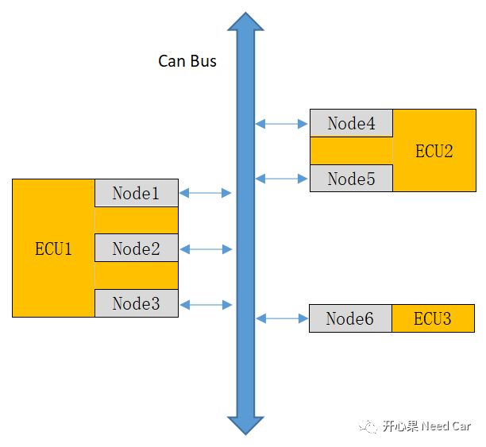
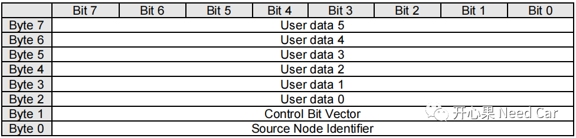
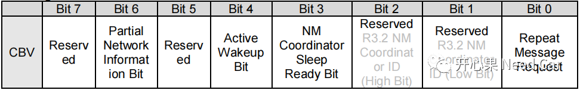

开心果 Need Car · 2022-01-16T15:24:00+08:00 · 微信原文
我们清楚Autosar网络管理，也知道收到网络管理报文会唤醒网络，但是网络管理如果上PN功能的话，就只能是指定的网络管理报文才可以唤醒网络。这个指定网络管理报文是如何过滤的呢？来，我们看看Autosar怎么做的。
1
缩写词
| Acronym/abbreviation | Description |
| CBV | Control Bit Vector |
| PN | Partial Network |
| PNC | Partial Network Cluster |
| PNI | Partial Network Information |
PNC解释
为便于理解，以最常见的Can总线为例，其它总线同理。比如在某个Can网段内，有3个ECU，其中ECU1包含3路Can，即Node1、Node2、Node3，ECU2包含两路Can，即Node4、Node5，ECU3包含1路Can，即Node6。如下所示：

假设，我们示例中的Can网段设计了5个PNC，分别定义PNC ID为：0x01、0x02、0x03、0x04、0x05。一个Node可以加入一个PNC，也可以加入多个PNC。这里的PNC类似Ethernet的多播组概念。举个例子：我的微信里有100个好友，但是我要将一些事情告诉某些好友，而不是全部好友。于是，我将好友1、2、3拉了一个小群，设置标签PNC1；我又拉了好友1、2、5、6组建了另一个小群，设置标签PNC2。我发朋友圈的时候，选择PNC1标签的好友可见我的消息，即使我的所有朋友都会看朋友圈，但是只有我的好友1、2、3可以看到我的消息（即唤醒Node1、Node2、Node3）。
假设需求如下所示：
PNC1：Node1、Node5、Node6
PNC2：Node2、Node4、Node6
PNC3：Node2、Node6
PNC4：Node1、Node2、Node3、Node4、Node5
PNC5：Node2、Node5
需求可以进行如下分配：
PNC1 (0x01) | PNC2 (0x02) | PNC3 (0x03) | PNC4 (0x04) | PNC5 (0x05) | |
| Node1 | 1 | 0 | 0 | 1 | 0 |
| Node2 | 0 | 1 | 1 | 1 | 1 |
| Node3 | 0 | 0 | 0 | 1 | 0 |
| Node4 | 0 | 1 | 0 | 1 | 0 |
| Node5 | 1 | 0 | 0 | 1 | 1 |
| Node6 | 1 | 1 | 1 | 0 | 0 |
注释：
1 表示使能Node，0 表示不使能Node。
2
NM PDU Format
一般来说，CAN网络管理报文的PDU格式如下所示：
Byte0:节点ID，比如Node ID为0x509（假设网络管理报文：0x500~0x5FF），工具配置时，此字节设置0x09即可。因为0x05是网段标识，底层收到0x05xx的报文即可知道是网络管理报文，之后根据偏移值（本例：0x09）即可知道是哪个Node。
Byte1:控制位向量。
Byte2~Byte7：用户数据

这里只讨论和PN功能相关的Bit6。
Bit6 = 1，表示有PN请求，如果有PN请求，则后面要判断收到的网络管理报文的PNC，判断该节点是否在此PNC内；
Bit6 = 0，表示没有PN请求，一般收到网络管理报文就直接唤醒网络。

3
NM PDU过滤算法
前面的讨论为本小节做了铺垫，那我们就好奇一个问题了：如果节点有PN功能，如果判断收到的网络管理报文可以唤醒当前节点的网络？
这里就涉及到了PDU的过滤算法问题。
示例
CanNmPnInfoOffset = 4，Pn Info在PDU中偏移的距离
CanNmPnInfoLength = 2，Pn Info在PDU中的长度
| Byte0 | Byte1 | Byte2 | Byte3 | Byte4 | Byte5 | Byte6 | Byte7 |
| NID | CBV | User Data | PN Info | User Data | |||
| 0x09 | 0x40 | 0xFF | 0xFF | 0x12 | 0x8E | 0xFF | 0xFF |
如何识别出网络管理报文可以唤醒该节点呢？Autosar中使用了屏蔽掩码过滤的方式，如上例，Pn Info的长度为2byte，对应设置2个Mask，比如：
CanNmPnFilterMaskByteIndex= 0，设置CanNmPnFilterMaskByteValue = 0x01；
CanNmPnFilterMaskByteIndex= 1，设置CanNmPnFilterMaskByteValue = 0x97。
之后对每个Pn Info采用位与运算，运算结果如下所示：
| Filter Mask Value(Byte) | Compared to received PN info | Resulting |
| 0x01(byte0) | 0x12(NM PDU Byte4) | 0x00 (no relevant PN information) |
| 0x97(byte1) | 0x8E(NM PDU Byte5) | 0x86(relevant PN information) |
其中，有一个字节与结果不为0，表示该报文可以唤醒当前节点。如果两个字节的比较均为0x00，则当前节点网络不被唤醒，忽略该网络管理报文。
提示：
有些transceiver有PNC过滤功能，也可以在硬件上设置此过滤功能。针对NXP TJA1145 Transceiver而言，只能过滤通信速率在1Mbps的报文，因此要注意项目中的网络管理报文速率，如果使用的是CANFD，且速率是500Kbps/2Mbps，则NXP TJA1145 Transceiver硬件过滤功能可能就不能使用。也许在不久的将来，硬件变速率过滤功能也将成为现实。
CANXL要来了，嵌入式的小伙伴，让我们拭目以待吧。
往期精彩回顾